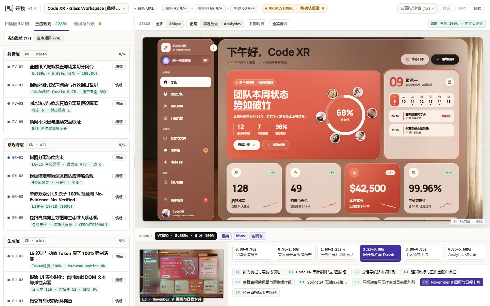
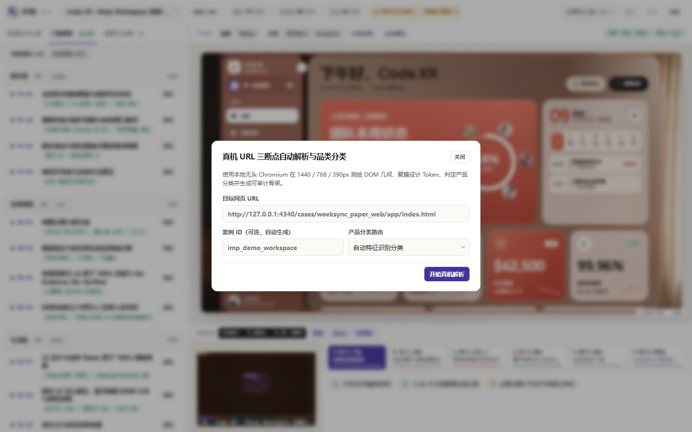
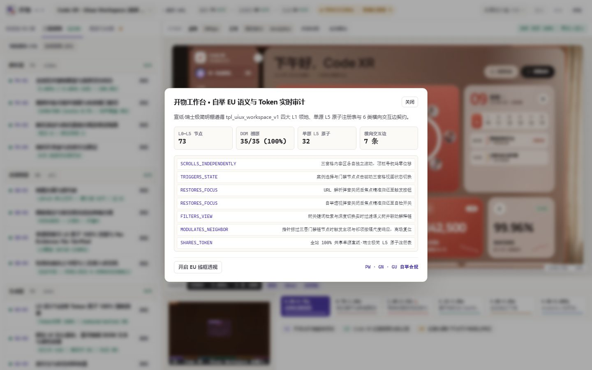
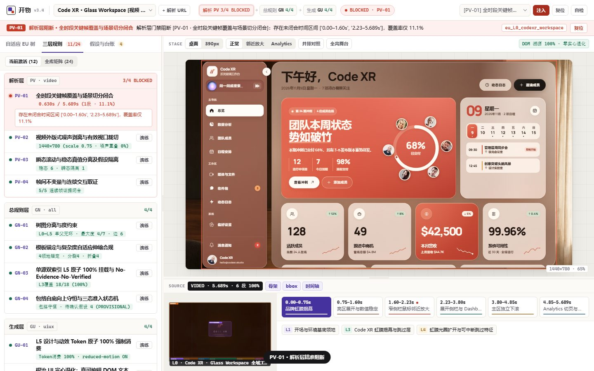
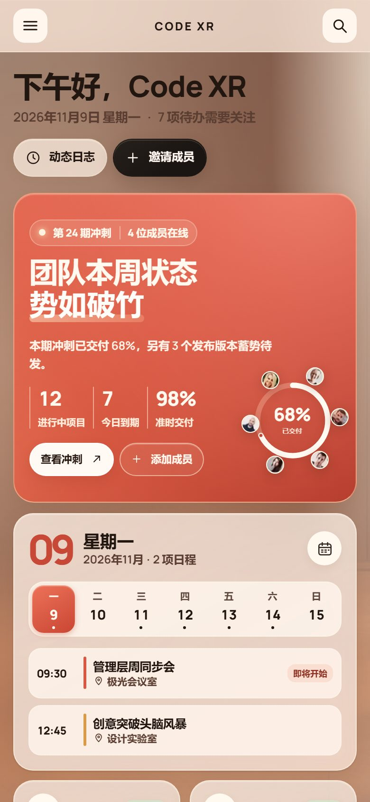
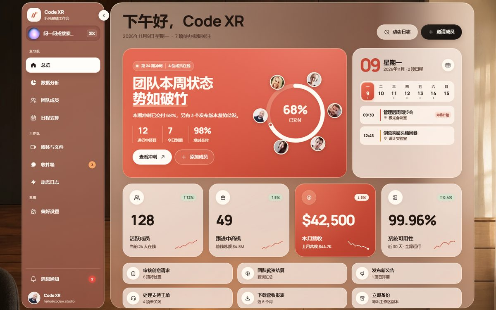
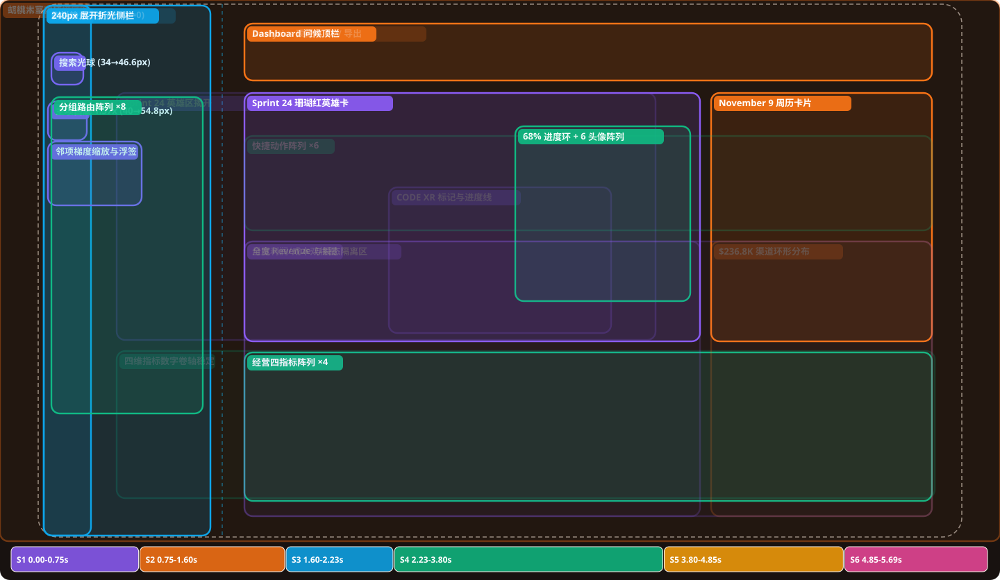
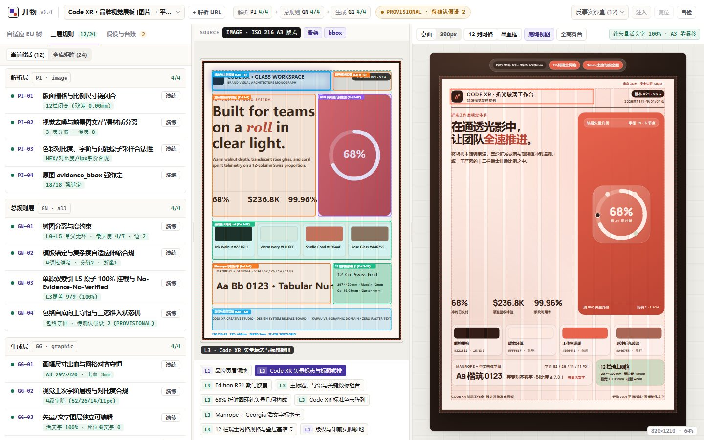

开物Kaiwu Adaptive-EU Design Workbench · 自适应设计单元工作台
先拆解、再生成、全程可证伪——把录屏、静图或网页解析成同一棵 L0~L5 自适应语义树，经 三层正交规则门禁 逐条把关后，产出可编辑、可交互、可回检的 UI 网页或平面印刷稿。
开物不只回答"做出来了没有"，更回答"做得对不对、凭什么、哪里还没确认"。每一个产物元素都能追溯到源素材里的证据，每一条规则都能被故意制造的错误验证真的会拦截。
它要解决什么问题
"照着参考做一版界面"时，真正的失败往往不是做不出来，而是做出来了却说不清对不对。下面 8 个问题全部来自真实项目过程，开物为每一个都配了一条会自动拦截的硬规则。
整体工作流
任何输入都先变成同一种中间表示（EU 树 + 横向边 + 原子注册表），再经过同一套规则引擎判定，最后由独立回检确认产物真的兑现了语义。
最终给出三态之一的准入结论：
核心概念速览
| 概念 | 含义 |
|---|---|
| EU 设计单元 | 被识别、约束、生成、回检的最小语义单元；eu_id 全局唯一，同时是产物 DOM 的 data-eu-id。 |
| L0~L5 六级树 | 产品 → 领地 → 区域 → 组件 → 特征 → 原子；单父、父子层级差恰为 1、直接子数 ≤ 7。 |
| 横向边 | 交互与联动只走 6 类白名单边，不进入纵向包含树。 |
| 原子注册表 | L5 原子的唯一来源，分 surface / typography / layout / motion / evidence 五区段，节点与原子双向索引。 |
| 骨架 | 源输入的几何与时间测绘：视口、时段、包络框、裁切变换、噪声区、观测值。 |
| 假设 | 素材无法证实、但生成时必须先定下来的内容，须显式登记并人工签认。 |
检验工作台：三窗格联动
零构建的原生 HTML/CSS/JS，离线可用。"宣纸瑞士"风格的三窗格把源素材、语义树与门禁、真实产物放在同一屏，任意一处点选，另外两处同步高亮。

| 区域 | 内容 |
|---|---|
| 顶栏 | 案例切换、"解析 URL"导入、三层门禁计数、准入状态、反事实沙盒（注入 / 复位）、自检 |
| 左窗格 | 自适应 EU 树（可搜索、带"分裂 / 折叠 / L5"徽标）· 三层规则 · 假设与台账 |
| 右上舞台 | iframe 内嵌可交互产物；桌面 / 390px、正常 / 邻近放大 / Analytics 状态切换，并排对照、全高舞台 |
| 底部测绘坞 | 源素材缩略图、骨架 / bbox / 时间轴图层开关、分段时间轴与当前时段激活 EU |


KAIWU_HIGHLIGHT_EU / KAIWU_PREVIEW_ACTION；iframe → 父窗口回传 KAIWU_SELECT_EU，随即请求 /explain/{eu_id} 刷新解释链（祖先、L4 特征、L5 原子、横向边、假设、绑定规则）。Y 型三层正交规则体系
规则按 输入模态 × 通用约束 × 输出领域 三层正交组织：三种输入汇入同一层总规则，再分流到两种输出领域。全库 24 条，每个项目只激活与其路由匹配的 12 条。
MODULATES_NEIGHBOR 边执行同一探针 focus_scale > neighbor_scale > 1.0。每条规则在 YAML 中都具备统一字段：bound_eu_levels、check_code、thresholds、invariants、failure_boundary 与唯一对应的 counterfactual_preset。求值顺序固定为解析 → 总规则 → 生成，层内按 ID 升序。
原型模板 + 自适应语义树
固定颗粒度的拆解要么在交互密集区太粗，要么在重复列表处太细。开物以原型模板为锚，按实际复杂度自动伸缩。
两套原型模板
| 模板 | 4 大 L1 领地 |
|---|---|
tpl_uiux_workspace_v1 | 开场外壳 · 导航坞 · 主舞台 · 辅助浮层 |
tpl_graphic_poster_v1 | 品牌页眉 · 主视觉 · 规格网格 · 版权页脚 |
五种自适应操作
| 操作 | 触发 | 效果 |
|---|---|---|
| TEMPLATE_ANCHOR | 模板必填槽位 | L1 骨架稳定 |
| SPLIT_HIGH_INTERACTION | 交互边 ≥ 3 | 拆出细组件与特征 |
| FOLD_ARRAY | 同构兄弟 ≥ 3 | 折叠为 ×N 阵列 |
| ATOMIC_MOUNT | 每个 L5 | 挂接注册表原子 |
| PRUNE_OPTIONAL_SLOT | 源中缺失的可选区 | 裁剪无关分支 |
Code XR 树片段
树图分离：结构走纵向树，交互走横向边
纵向树节点只允许 product / territory / region / component / feature / atom，禁止 interaction. / event. / state. 等前缀。交互只能用以下 6 类白名单横向边表达，每类都有生成侧探针：
诚实放行：证据、假设与三态准入
No-Evidence-No-Verified：任何标为已验证的节点都必须挂接 evidence 原子；实体 L3 子树的 L5 原子覆盖率必须 100%。拿不到证据的内容，只能登记为假设。
以 Code XR 为例，初始未签认的假设包括：片尾 Analytics 仍在滚动的数字、原片未展示的 3/6/12 月 CSV 明细口径、替代用的室内背景图等。每条假设都绑定到具体 EU 与规则。
反事实沙盒：证明规则真的会拦截
24 条规则各对应 1 个反事实预设。每次测试都深拷贝当前快照，按预设真实改写 IR / 骨架 / 回检数据，再交给同一个规则引擎求值；正式快照不受影响。

violate_PV01_partial_video_coverage（删去中段时间）：解析层立即 BLOCKED，覆盖率跌至 11.1%，未闭合区间被精确列出，顶栏一键复位。命名一一对应
violate_<规则ID>_<语义>，如 violate_GN01_interaction_in_tree，与规则 YAML 中的 counterfactual_preset 字段严格对应。
首障归因
violated_rule_id 必须是预设的目标规则，且它在本次求值中真实失败，否则视为引擎缺陷；连带失败列入 co_failed_rule_ids。
一键复位
使用 reset 恢复正式快照求值，准入状态随之回到注入前。
生成侧独立回检
generator_readback.py 不信任生成过程的自述，而是直接扫描 cases/*/app/ 产物源码，生成层 8 条规则全部基于这份快照求值。
| 回检项 | 对应规则 |
|---|---|
DOM data-eu-id 覆盖率与唯一性 | GU-04 / GG-04 |
| 可编辑文本节点数、真实控件数、UI 位图面积 | GU-02 |
Token 消费率、prefers-reduced-motion | GU-01 |
| 交互横向边逐条探针 | GU-03 |
| 390px 窄屏零横向裁切 | GU-02 |
| 平面活文字 / 矢量可编辑 | GG-03 |
| 防御性小字命中数 = 0 | GU-04 / GG-04 |

主基线：Code XR · Glass Workspace
一段 1920×2560 竖版、5.689 秒的录屏（下半部是代码窗，属于噪声区）。v3.3 只补查了 1.60–2.23 s 一段；v3.4 把整片连续切成 6 段，覆盖率 100%，逐段绑定 EU。


data-eu-id 与 data-segment-id，可与产物、EU 树三向联动。同源跨领域对照：同一品牌 → A3 平面展板

案例库：21 个跨流派复刻
覆盖 4 个录屏、2 张静图、15 个网页，跨越 6 大品类与多种迥异视觉流派——液态玻璃、新粗野主义、极暗 HUD、复古拟物、电子纸、瑞士网格……全部 12/12 规则通过，处于诚实的 PROVISIONAL。鼠标悬停卡片可切换"生成产物 / 参考源"。
产品品类与本地三模态解析
在三层规则之上，6 大产品品类负责识别"这是什么类型的产品"，并追加品类专属检查（如 CAT-DASH-01..03）。
本地解析器：零外部 API
🌐 网页 URL
无头 Chromium（Playwright）在 1440 / 768 / 390 三视口实测 DOM 几何，聚类计算样式为 Token，识别交互控件、资产槽位与品类，输出归一化骨架与 EU 树。
🖼️ 静图
仅 Pillow + NumPy：主色 K-means 聚类、双层区域分割、对比度采样，生成 Set-of-Mark 标号图，供 Agent 按编号归组 EU、区分 ui_dom 与 asset_slot。
🎞️ 录屏
无需 ffmpeg / OpenCV：无头浏览器离线均匀抽帧，计算稳态关键帧与 12×8 网格帧差热点，推断横 / 纵交互边候选。
解析结果落地为 cases/<id>/parsed_case.json，工作台自动发现并纳入案例列表。
接口与 AI-First 工具
| 方法 | 路径 | 作用 |
|---|---|---|
| GET | /api/health | 服务与加载状态 |
| GET | /api/cases | 案例列表与品类 |
| GET | /api/categories | 6 大品类 |
| GET | /api/rules | 规则目录、模板、工具 schema |
| GET | /api/case/{id}/bundle | 完整检验包 |
| GET | /api/case/{id}/explain/{eu} | 单个 EU 解释链 |
| POST | /api/case/{id}/test_rule_gate | 反事实注入 / 复位 |
| POST | /api/case/{id}/confirm_assumption | 假设签认 / 重置 |
| GET | /api/error_ledger | 残差台账 |
| POST | /api/parse/url|image|video | 本地三模态解析导入 |
AI 工具与 REST API 共用同一引擎，可供 Agent 直接调用，也可命令行运行：
status: "OK"（出错为 "ERROR" 并带 message），UTF-8 编码。静态挂载 / → frontend、/cases/ → cases。残差台账：从真实错误中长出来的规则
8 条真实残差，每条绑定唯一主规则与反事实预设，状态均为 closed_by_rule——同类错误今后在对应层被 BLOCKED，而不是靠人记得。
质量验收
tests/verify_v34_kaiwu.py 独立验收矩阵，最近一次报告（2026-11-23）59 / 59 全部通过。
| # | 验收口径 |
|---|---|
| 1 | 24 条规则结构完整、规则文件零单项目数字；三个路由各激活 12 条 |
| 2 | L0~L5 无跳层、单父无环、度 ≤ 7、横向边零越界、纵向树零交互节点；存在真实锚定 / 分裂 / 折叠 |
| 3 | 实体 L3 的 L5 覆盖率 100%；Code XR 0.00–5.689 s 覆盖率 100% |
| 4 | PROVISIONAL → 全部签认 RELEASE_READY → 重置回 PROVISIONAL |
| 5 | 反事实预设逐一在目标层 BLOCKED 且首障归因为目标规则 |
| 6 | 真实浏览器 1440×900：零 console error、零防御性小字、三屏联动与邻近放大实测生效 |
快速开始
# 启动服务 python backend/server.py --port 4340 # 浏览器打开 http://127.0.0.1:4340/ # 运行独立验收 python tests/verify_v34_kaiwu.py python tests/verify_parsers_and_categories.py
| 模块 | 依赖 |
|---|---|
| 核心引擎 / 门禁 / 工作台 | 仅 Python 标准库（有 PyYAML 时优先） |
| 静图 / 录屏解析 | Pillow + NumPy |
| 网页解析 / MP4 抽帧 | Playwright（无头 Chromium） |
目录结构
开物/ ├─ rules/ 6 个规则 YAML（24 条） ├─ backend/ ├─ templates/ 2 个原型模板 │ ├─ server.py HTTP 服务与 REST API ├─ categories/ 6 个产品品类 │ ├─ adaptive_eu_engine.py 自适应 EU 引擎与规则求值 ├─ cases/ 21 个案例 │ ├─ generator_readback.py 生成侧独立回检 ├─ frontend/ 三窗格检验台 │ ├─ category_registry.py 品类识别与审计 ├─ tests/ 验收脚本与报告 │ ├─ ai_tools_mcp.py AI-First 工具 ├─ docs/ 架构文档与本介绍 │ └─ parsers/ 网页 / 静图 / 录屏解析器 └─ UI与交互EU错误排查台账.md
版本演进
| 版本 | 要点 |
|---|---|
| v3.3 | Code XR 复刻初版；只补查了局部片段，整片未结案，暴露出 RES-KW-01..08 |
| v3.4 | 净室重建：Y 型三层规则、模板与自适应伸缩、树图分离、单源双索引原子、三态准入、24 个反事实预设；Code XR 整片 100% 结案 |
| v3.4 扩展 | 本地三模态解析器、6 大产品品类、案例库扩展至 21 个、导入器与自举审计（模块按 v4.0 口径） |